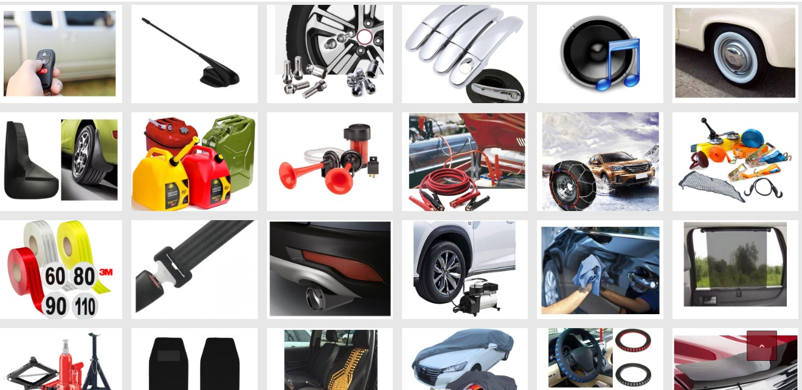

Neumaticos Rocco
Junto a tus caminos
servicios y accesorios
TODO LO QUE BUSCAS PARA TU AUTO EN UN SOLO LUGAR...

Los accesorios para autos son elementos adicionales que se agregan a un vehículo para mejorar su funcionalidad, comodidad, seguridad, rendimiento o apariencia . Estos accesorios pueden ser instalados después de la compra del vehículo y personalizarse según las preferencias de cada usuario.
La alineación de un vehículo es un mantenimiento importante que contribuye a el rendimiento y durabilidad del neumatico y la seguridad del conductor al central la posicion de los ejes para el correcto desplazamiento del vehiculo

Un neumático se balancea para asegurar que su peso esté distribuido de manera uniforme alrededor de la circunferencia de la rueda. Esto es importante para garantizar un viaje suave y libre de vibraciones al conducir el vehículo.

La mecánica ligera de un automóvil se refiere al conjunto de trabajos de mantenimiento, reparación y ajustes que se realizan en el tren delantero del vehiculo que abarcan todo lo que es freno,suspension,direccion y traccion del mismo.